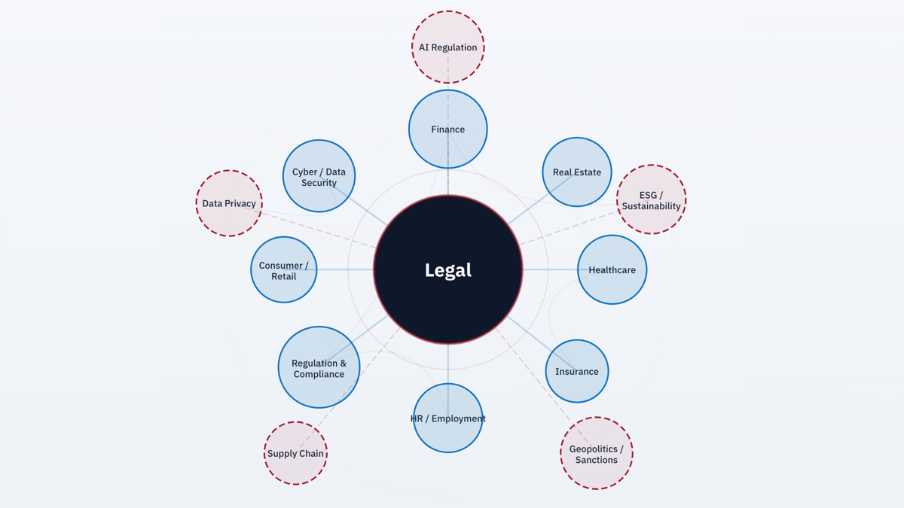
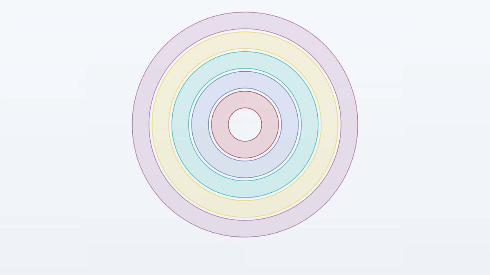
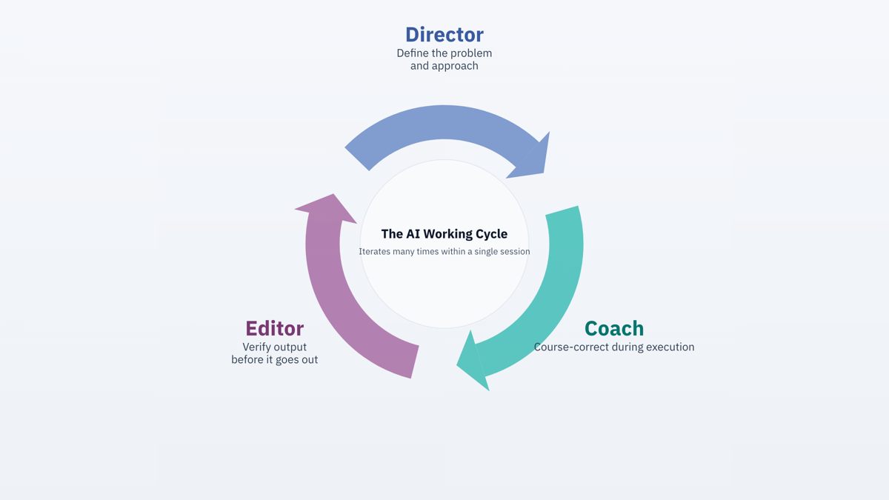
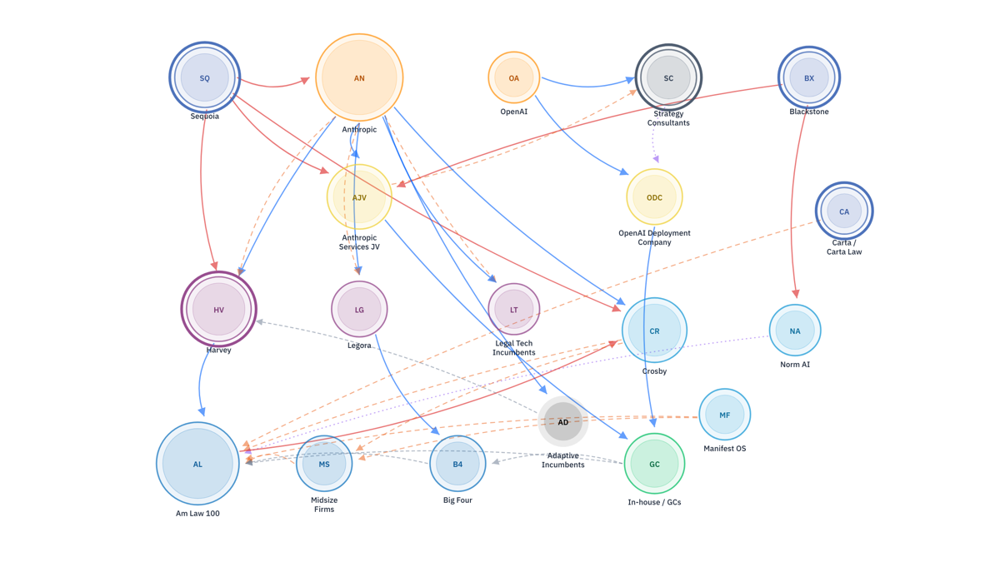
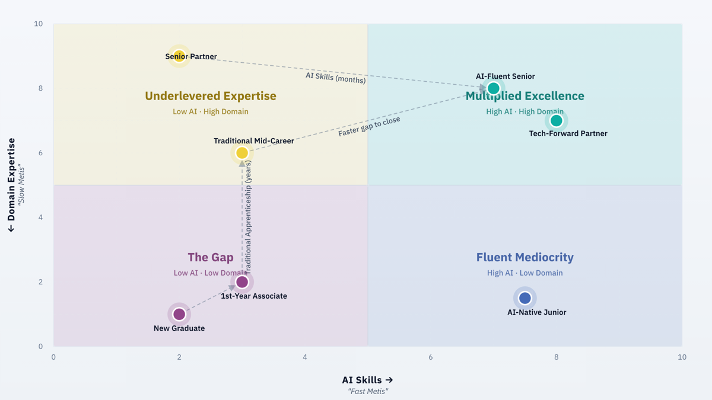
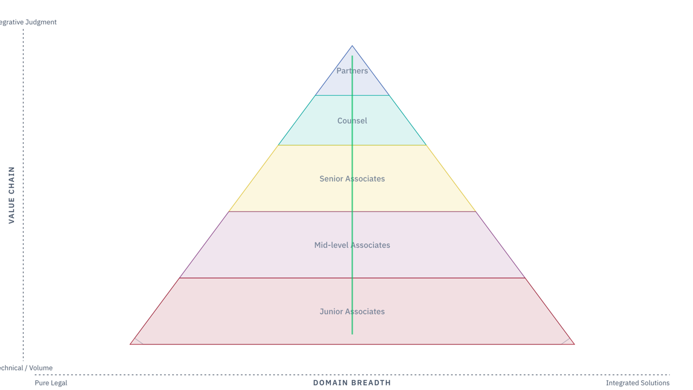

The essay visuals
Six figures, each built for an essay in the series and published alongside it — analysis you can read, then turn and inspect. They argue the essay's point rather than survey the evidence base — the Analysis section applies two published analytical lenses: topic mapping and actor mapping, with driver and dynamics mapping and scenario mapping in progress.
Six figures, six arguments
Each pairs with an essay in the series — analysis you can read, then turn and inspect.

Law as the gateway
The legal node as connective tissue — how every professional function routes through law, and what an AI system at that node can see.
Open visual→
Harvey's strategic evolution
The expanding rings of what the most-discussed legal-AI company appears to be building — read as strategy, not a wrapper.
Open visual→
Director, coach, editor
The shift in the human role when you actually work with AI agents on complex intellectual tasks — directing, coaching, and editing rather than drafting.
Open visual→
The scrambled competitive map
The landscape AI is redrawing — incumbents, challengers, and clients all exerting gravitational pull on where value settles.
Open visual→
The four ingredients
What good AI outcomes actually require — and why the profession is systematically undermining the scarcest of the four.
Open visual→
Pyramid transformation
Where elite lawyering goes when AI automates the base of the pyramid — from up-or-out to up-and-out.
Open visual→These six were built against an earlier and smaller corpus (170 sources, 39 topics). They are kept as published rather than regenerated, so the essays they pair with continue to describe what a reader actually sees. The original topic network is preserved for the same reason; its successor, built on the full 600-source record, is the first lens in the chain.